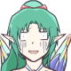
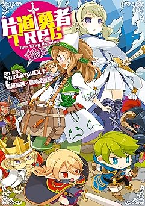

| シルバーセカンド 2016/4/1緊急発表 ◆緊急ニュース！ ◆詳しいお話 2016/6/18追記 ◆片道勇者TRPG ついに発売！ → ｼｽﾃﾑ紹介も！ ※↑ページ内ﾘﾝｸ |
| 妖精イーリス： 『片道勇者』の旅のアドバイザー、妖精イーリスでーす！ さて、去年と同じ展開のエイプリルフールマンガで始まった今年の4/1！ 強制横スクロールRPG 『片道勇者』 が 商業TRPG化 ってことだけど、 これって本当？ ※TRPG＝テーブルトークRPG |
| 作者（SmokingWOLF）： イエス！ ウソみたいなニュースですが去年に引き続いて全くウソなしです！ 「片道勇者の商業TRPG化なんてうっそだー」とお思いのあなた、 実際の発表に使われたスライドをもらってきましたのでご覧ください！ |
| 妖精イーリス： わー、右のはネムリだよね？ TRPG版のネムリはかわいいねー。 描いてくれているイラストレーターさんは『モタ』さんだって！ そういえば「TRPGって何？」っていう人も多い気がするんだけど、 TRPGってどんなゲーム？ |
| 作者： えー、『TRPG』は簡単にいうと『ルール付きのごっこ遊び』です。 プレイヤー数人とGM（ゲームマスター）が集まって、GMから与えられた課題を こなすために各プレイヤーがキャラクターの役割をこなすゲームです。 で、ある行動がうまくいったかどうかをサイコロで決めることが多くて、 その出目を見て「ワーキャー！」するのが楽しいゲームでもありますね！ |
| 妖精イーリス： 『片道勇者TRPG』はTRPG初心者の人もターゲットにしてるらしいから、 これの発売でTRPGを遊ぶ人が増えるといいね！ で、ゲームをデザインしてくれているのは冒険企画局の 『齋藤高吉』さんってクリエイターさん！ こんな人なんだって！ |
| 妖精イーリス： えーと、アウトレイジって「憤怒」とか「暴力」って意味だっけ……。 「殺伐としたゲームを得意とする」って書かれてるんだけど大丈夫なのこれ。 ここに並んでる代表作ってどんなゲーム？ |
| 作者： 10年以上前の作品ですが、一番左の「スカベンジャーRPG 墜落世界」は ニコニコ大百科の記事 によるとランダム要素がかなり強いゲームみたいで、 「キャラを作るのにかかった時間よりも 死ぬまでの時間の方が短かったぜ！」 ということが往々にして起きたりするって書いてありました。 |
|  | 妖精イーリス： ブーッ！ |
| 作者： 噂ではランダム要素が強いハードコアなゲームを好んで作られる方らしくて、 齋藤先生が担当してくださると決まってその評判を知ったときは、 「やった！ 『片道勇者TRPG』にはこの人しかいない！ 最高の人材が来たッ！」 と思いました。 |
| 妖精イーリス： ドＳとドMの出会いみたいになってる……。 |
| 作者： いやー、死なないゲームにも飽きてきているもので！ 同氏の『リアリティーショーRPG キルデスビジネス』も 先日お試しで遊ばせていただいたんですが、 こちらも色々あってなぜか私が女子校生（36歳・男性）やって おじいちゃんに痴漢されたり、気軽に死ねたりして面白かったです！ |
| 妖精イーリス： そ、そう……。 えー、とりあえず次は『片道勇者TRPG』の特徴を紹介するスライドね！ |
| 妖精イーリス： えーと、「オンラインセッション」ってチャットとか使ってTRPGを遊ぶことだよね。 2～3時間って手軽な方？ |
| 作者： かなり手軽ですね。普通のガッツリしたTRPGをオンラインセッションで遊ぶと、 1話分のつもりが 真昼に始めて夜中に終わったりする こともあるんで。 <自家製版>片道勇者TRPGリプレイでも結構そんなことがありました。 |
| 妖精イーリス： うわあ、大変だったんだね……。 |
| 作者： こちらの『片道勇者TRPG』は、キャラクター作成が本当に10分でできますし、 GMさん側もクエストとランダムイベントの組み合わせでパパッと準備できるので みんなの負担がとても軽そうなのがすばらしい！ だいたいの場合、GMは準備が大変でやりたがらない人も多いんですが、 これなら持ち回りでもGMができそうな気がしています。 |
| 妖精イーリス： 「死んでも終わりじゃない！」って…… やっぱりよく死ぬっぽいニュアンスなんだけど？ |
| 作者： ファンタジーでキャラがバリバリ死ぬタイプのTRPGって 最近ものすごく少ない気がするので貴重ですよ、これは！ |
| 妖精イーリス： そういう問題ー！？ まあ物語的にはループものだから死んでも後で生き返るんだろうけどさあ……。 |
| 作者： あと、原作にも驚くほど慎重な配慮がなされてて、クラスは網羅されてるし、 原作の人気NPC も多数登場ということで、とっても楽しみですね！ |
| 妖精イーリス： あ、絵があるってことはたとえばネムリはもう登場確定なんだよね？ そりゃネムリはさすがに人気NPCの中に入るよね……。 あの……ところで私は？ |
| 作者： ……。 |
| 妖精イーリス： ねえちょっと！？ なんで黙るの！？ っていうかなんでさっき 人気NPC って強調したの！？ もしかしてそういうことなの！？ 私は 人気 の枠に入ってないってこと！？ |
| 作者： ……。 |
| 妖精イーリス： あとPS移植リメイク『不思議のクロニクル 振リ返リマセン勝ツマデハ』でも 片道勇者DLC内で 私だけ出番なかった んだけど！？ ねえ聞いてる？！ |
| 作者： あ、次のスライドに行きましょう。 |
| 妖精イーリス： やだー！！ 出番欲しいよー！！ 冒険企画局のひとお願いしますぅぅぅー！！ |
| 妖精イーリス： ……この応援コメントのスライド、ここに貼る必要あった？ |
| 作者： ホントにここに書いてある通り、エッセンスをすごく上手に抽出してて かつ判断を求められる度合いが増してた感じだったので、 ゲーム開発者として感動したくらいなんですよ。 自分もこれだけシンプルかつ判断を求められるゲームを作りたいなあ。 |
| 妖精イーリス： へえー、やっぱりプロの人はすごいんだ。 で、「実際にセッションをするのが楽しみです」ってあるけど、もうやったの？ |
| 作者： しました！ 以下の方々とルールブック掲載用の リプレイを収録したんですよ。 |
| 妖精イーリス： スーパーTRPGゲーマー「桜庭星菜」さんと、 超有名そうなTRPG動画製作者の「ブリッツP」さんだって！ すごそうなメンツじゃない！？ あ、そういえば①の「SmokingWOLF」って名前、 かろうじてどっかで聞いたことあるような？ |
| 作者： それが私だっつーの！ |
| 妖精イーリス： で、セッションどうだった？ |
| 作者： お二人やGMさんのTRPG力に圧倒されましたねー、 ものすごく面白かったです！ 私は他プレイヤーさんに配慮しきれなかったところが まだまだあるかなという感触でした。 |
| 妖精イーリス： そういえばこの人趣味でしかTRPGやってないわ…… そりゃプロの人とか動画を何十本も上げている人の方が経験値多いよね。 |
| 作者： ルールは全体的にとても分かりやすくてすばらしかったです！ 一部、ちょっと見慣れなくて私がルールを把握しづらかったところは、 「この辺とかこの辺とかもうちょっと分かりやすくなると……嬉しいです！」 ってクリエイターさんにドザザーッと長文でお願いしてきました。 |
| 妖精イーリス： ひどい。 |
| 作者： きっと製品版になる過程でどんどん理解しやすくなるよう、 うまい説明や調整が行われていくはずです。 最終的に誰にでも理解しやすい説明を組み上げられるのがこの道の達人！ すでに非常に分かりやすいんですが、完成版のルールブックは より分かりやすくなると思いますよ！ |
| 妖精イーリス： なるほどねー。 で、セッションの内容とかバランスはどうだったの？ やっぱりデッドリーでハードコア？ |
| 作者： うん、すごかった。 セッション内容はリプレイとしてルールブック内に収録されるのでお楽しみに！ |
| 妖精イーリス： そ、そうなんだ……。 というところで、次は「今後の展開」についてのスライドだよ！ |
| 妖精イーリス： ねえ、「SmokingWOLFによる『片道勇者TRPG』リプレイ、連載開始予定」 とか書いてあるんだけど大丈夫なのこれ。 連載とかイヤな予感しかしないんだけど。 |
| 作者： 予定は未定だし！ そもそも趣味レベルの私が作るリプレイとか クオリティが不透明すぎるしあまり期待されてないって！ 大丈夫大丈夫！ まだ何話とか書いてないから2話打ち切りとかもあるし！ |
| 妖精イーリス： せめてルールの説明とか雰囲気が伝わる程度の質には仕上げなさいよ……。 |
| 作者： うん……そして他にも、 「発売記念オンラインコンベンション」を実施予定ってのがすごいですね。 オンライン展開に力を入れてる感じがあります。 |
| 妖精イーリス： えーと、オンラインでやることは分かるんだけど、 TRPGの「コンベンション」ってそもそも何なの？ |
| 作者： 私も行ったことがないから詳しくは知らないんですけど、 TRPGの「コンベンション」のイメージとしては自由に集まった人で TRPGをやりあうイベントみたいな感じでしょうか。 知らない人同士でも遊んだりするっぽいですね。 |
| 妖精イーリス： そんなイベントがあるんだー。 じゃあお友達がいなくても遊ぶチャンスがある？ |
| 作者： と、思います。私がツイッターでアンケート取ってみたら、 「TRPGをまだやったことがなくて」かつ「やってみたい」人の率が けっこういらっしゃったので、オンラインコンベンションは TRPGデビューするチャンスかもしれませんよ。 オンライン開催なので、不安ならSNSのお友達を誘って 参加してみてもいいですし、1人でも参加できますしね。 あ、でもルールブックは用意しておいてくださいね！ |
| 作者： ということで『片道勇者TRPG』、発売を心待ちにしています！ |
| 妖精イーリス： でも君は発売前からセッション収録しないと 6月のリプレイ連載開始に間に合わないでしょ。 発売日が6月18日だよ？ |
| 作者： はい……がんばります。 ※6/17追記：色々あって7～8月頃に連載開始になりました |
| 妖精イーリス： 『片道勇者TRPG』 は 6月18日 発売！ 内容モリモリで定価1,600円（税別）らしいので、 欲しい人はしっかりおこづかいをためておいてね！ |
| 妖精イーリス： はあ、私の出番どうなるんだろ……。 |
| 作者： そういえば「イーリスはルールブックに出ると思う？」 ってアンケートしたらこんな感じになりましたよ。 |
| 妖精イーリス： あれ、これって思ったより期待されてるんじゃない！？ 「出るよ！」と「出ない気がする」が5：2くらいで「出る」優勢だよ！ |
| 作者： ユーザさんからの期待的にはうれしい結果になりましたね！ ……これで出なかったら余計にショックが大きくなりそう。 |
| 妖精イーリス： あ、ああ～！！ やめてー期待させないでー！！ |
| 作者： 果たして妖精イーリスに出番はあるのか！？ 今後の展開にご期待ください！ |
| 妖精イーリス： 『片道勇者』の旅のアドバイザー、人工妖精イーリスでーす！ ということで、ついに冒険企画局さんの『片道勇者TRPG』が発売されたよ！ このページ、元は『片道勇者TRPG』の「発表用」ページだったんだけど、 この際だから「発売」のお知らせも一緒にやっちゃうね！ |
| 作者： というのも、発売日に『片道勇者TRPG』で検索してみたら、 なんとこのページが検索結果の先頭に来ちゃってたので、 慌ててこのコメントを足したんですよね！！ （←原作ゲーム「片道勇者」の開発者、「片道勇者TRPG」では「監修」を担当） |
| 妖精イーリス： それはいいとして、 『片道勇者TRPG』 ルールブックはこちら！ バーン！ ↓ |
| 【片道勇者TRPG】 TRPGルールブック 著 齋藤 高吉 様 （冒険企画局） イラスト モタ 様 監修 SmokingWOLF 価格 税込￥1,728 （消費税により変動あり） 255ページ B6版 |
クリックでAmazonページへ  |
| 作者： 楽しそうな表紙でワクワクしますね！ フリーダ王女もネムリもちびキャラ群もかわいい！ 中身としては、私も参加した見本プレイの「リプレイ」と、 「片道勇者TRPGを遊ぶためのルール」、そして 「無印版のプレイを再現したキャンペーンシナリオ」が 収録されてます！ |
| 妖精イーリス： さっそく中身を読んでみたんだけど、 リプレイでキミがお姫様の役をやってたんだね。 |
| 作者： TRPGなので、そういうのもやり放題！ といっても私がプレイヤーキャラクターをするときは、 基本的にていねい系の淑女（しゅくじょ）キャラが多いんですけれどね。 |
| 妖精イーリス： あとわたしさ！ 「出番が欲しい！」って言ったけど、 色んな意味でわたし出すぎじゃない！？ なんかその、すみません！！ |
| 作者： ええ、ビックリするほどイーリス盛りだくさん なのでお楽しみに！ |
| 妖精イーリス： それとリプレイ見たら難易度が予想以上にハードコアだったんだけど！ いきなりしょっぱなから全滅の危機って！！ |
| 作者： そうだよ！ TRPG版の「犬小屋」には気をつけろ！ みんな！ 経験値稼ぎ用かと思って入ったらドえらいことになるぞ！ |
| 妖精イーリス： でも、戦闘システムや進行はとても分かりやすそうだったよね。 バトルも１ターンで終わるみたいだし、イベント処理も分かりやすいし！ |
| 作者： その辺はデザイナーさんのセンスとブラッシュアップの成果が光ってます！ 本当にお疲れ様でした！ 要望のほとんどにも対応してくださって本当にありがとうございます！ 原作忠実度も予想以上に高い！ すごい！ |
| 妖精イーリス： 原作忠実度はすごいよねー！ データもかなりそれっぽいよ！ デザイナーさん、かなり遊びこんでくれたみたい！ |
| 作者： 皆さまのお手元に届く日が楽しみですね！ 私もこのTRPGの「リプレイ」をサイトで連載していく予定ですので、 よければそちらも読んでいただけますと幸いです！ あと、「片道勇者TRPG」には「サプリメント（追加データ集）」も予定されてますよ！ |
| 妖精イーリス： 遊ばれていくうちに課題も見つかるかもしれないけど、 デザイナーさんや編集部の人たちの目にとまれば、 「サプリメント」に取り入れてくれるかもしれないよ！ ということでみなさんのご感想、お待ちしてまーす！ |
| 作者： イエス！ ではこの辺りで、今回の追記を締めさせていただきます！ ご静聴、ありがとうございました！ 以下は私が書いた紹介記事です！ よければぜひ参考にしてください。 |
| 【片道勇者TRPG 解説！】 |
ということで、早速 『片道勇者TRPG』 についてご紹介です！ 【まず「TRPG」って何？】 一言で言うなら「ルール付きのごっこ遊び」です！ 「GMという司会者」と「数人のプレイヤー」が集まり、プレイヤーは GMの出した試練に対してキャラクターの行動を演じつつ、ゲームを進めていきます。 たまに「３ｍの穴を幅跳びで飛び越えられたか？」といった、成功したか失敗したか 判断が付きづらい行動があるので、そういう場合はサイコロの出目で成否を決定します。 そこの「判定」でワーキャー言うのが楽しいゲームです。 なおコンピュータゲームと違い、キャラクターのデータは自己管理です。 【『片道勇者TRPG』 はどんなゲーム？】 まず一番大きな点を述べると、『片道勇者TRPG』は 縦３列×横一定日数のエリアを右に進行しながら冒険していくゲームです。 ＜ゲームの進行図 これは4日の旅＞ ※以下の状況なら、2日目までの地形はすでに闇に呑まれたことになっています  マップは、１日目以外は未知なので、「偵察」したり、 実際に行ってみないと何が起きるか分かりません。 各プレイヤーは、分かれて進むことも可能です。 「魔王を倒す」か、「世界の果てにたどりつく」と一周が終了します。 ……が、実はゲームの主目的はその２つではありません！ 【ゲームの主目的】 ゲームの目的は、各PCに与えられた秘密の「クエスト」をこなしていくこと！ 「え、魔王倒すことじゃないの？」と思われるかもしれませんが、 真の目的は「クエスト」のほうにあります！ もちろん、クエストクリアの条件として「世界の果てにたどりついた」や 「魔王を倒した」といったものも作れますので、 GMさんが正当派なゴールを設定することも普通にできます。 ただ、魔王撃破などが常に「主」ではないよ、ということですね。 ルールブックに書いてあるデフォルトクエストだと、 プレイ内で「魔王とは別の試練が新たに発生するクエスト」や、 「旅を楽にするクエスト」「逆に難しくするクエスト」などがあります。 一例としては、「すごく強い敵と戦って強力な『特徴』を解放する」といったクエストですね。 この場合、「魔王を倒す」のはオマケになります。 また「クエスト」には、攻略していくと次の段階のクエストがオープンされて、 物語が進んでいくものがあります。そうやって連続クエストを積み重ねていくプレイを、 「キャンペーンシナリオ」といって、続き物のお話として表現されます。 基本的には、「キャンペーンの最後のクエスト」で大ボスと戦う感じになるでしょう。 クエスト進行は１プレイ（＝勇者の１人生）あたりだいたい１回分なので、 基本的には何度も転生しながらストーリーを進めていくことになります。 ゲームが終わると【伝説P】がもらえて、新たな特徴を解放できたり、 次元倉庫を拡張できたりします。この辺りの流れも実に原作再現！ 【１日のアクションについて】 上に掲載したマップは４日の旅をあらわしたものですが、 さらに１日の間に何が起きるかが分かれば、 このゲームの全体の流れをおおまかに掴めたといっていいでしょう。 １日の間に発生するイベントは、以下の流れとなっています。 ●昼イベント（強制）： マスに設定されたイベントが実行される。強制。 店に出会ったり、ダンジョン探索したり、山賊に襲われたりする。 ↓ ●魔王遭遇（強制）： ２、４、６日目の昼イベント後のみ発生。魔王が出てくる。 ↓ ●夜イベント（自由）： いわば自由行動。偵察したり仲間と交流したりできる。 ↓ そして次の日へ……。 各イベントでは、「能力値＋２Ｄ６（サイコロ２個を振った合計）」の結果で 物事がうまくいったかどうかを判定します。 能力値はおなじみの「筋力・敏捷・生命・知力・意志・魅力」の６種類！ 使う能力はその都度、GMに指示されます。 同じマスに味方がいれば、「協力」して能力値を足すこともできます。 （※ 最大で、互いの【好意】＝仲良し度の分まで） 他にも「ジャッジ」と呼ばれるシステムがあり、ロールプレイや演出をすることで 判定に＋１のボーナスをもらえる処理が明文化されています。 このあたりも昔ながらのTRPGの「PCの演出による補正」を うまいことシステム化した感じで面白い部分です！ 「でもロールプレイなんていきなりできないよ！」という人も安心！ 何も思いつかなければ、演出をやらずにそのままサイコロを 振ればいいだけなので、初心者の人も安心です。 【シンプルでアツい戦闘！】 『片道勇者TRPG』では、通常戦闘は1回の攻撃で終了します！ シンプル！ すばやい！ 簡単！ ただし敵に攻撃を当てるためには「攻撃判定」という判定に成功する必要があり、 仮にうまく攻撃が当たっても、「ダメージ算出」が必要です。 もし同じマスにいる味方全員のダメージを足しても敵を撃破しきれなかった場合は、 【反撃ダメージ】や、余計に疲れるペナルティを受けてしまいます。 逆に、「攻撃に成功」し、「高いダメージを出して敵LIFEを削り切れれば」、 なんと無傷で完全勝利することができます！ なお勝敗にかかわらず、戦闘は１攻撃で即決着します。 おなじみの【強打】スキルでダメージを増したり、 逃げるときには【ダッシュ】スキルを使えたりと、 搭載スキルの機能はほぼ完全に原作の雰囲気を維持！ なお、魔王との戦いだけは特別で、1回の攻撃では終わりません。 毎ターン反撃を受けながら、徐々に魔王のLIFEを削って倒すことになります。 ということで、こんな感じでイベントをこなしたり、 戦闘したりしつつ、「クエスト」を段階的にこなしていって 真に世界を救うために駆け回るのが『片道勇者TRPG』です！ ざっくり流れを説明してみましたが、いかがでしょうか。 ルールブックにはPC同士が仲良く進める感じのクエストのみが紹介されていますが、 アイデア次第で、「シノビガミ」のように仲間同士で殺伐と対立しながら 物語を進めていったりすることもできそうです。 そっちのほうが面白そうって？ そう思われた方はぜひ、 ツイッターなどで感想をつぶやいたり、編集部さんにご意見お寄せください。 サプリメントで、それ用の面白いルールが搭載されたりするかもしれませんよ！ ということで、冒険企画局さまによる『片道勇者TRPG』、 興味があればぜひ、お買い求めください！ 私がプレイヤーキャラクターを演じているリプレイも収録されています！ ルールブック内リプレイの私のPCは、なんと「お姫さま」！ 一体どんなことになっているかは、見てのお楽しみです。 クリックで 『片道勇者TRPG』 Amazon販売ページへ |
| 妖精イーリス： 2016年7～8月からは「片道勇者TRPG」のリプレイ連載も始まるよ！ ハチャメチャな冒険をお楽しみに！ |